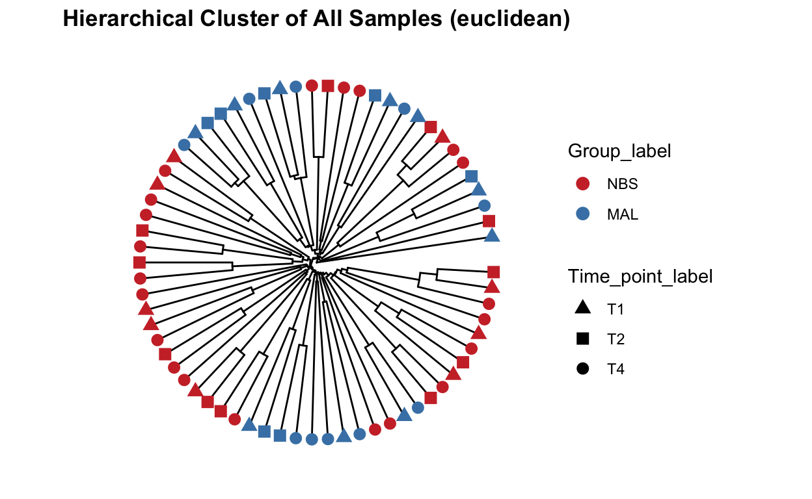

Data visualization
Load and/or install required R packages.
knitr::opts_chunk$set(echo = TRUE, warning = FALSE, fig.align = "center")
pkgs <- c("tidyverse", "santaR", "phyloseq", "ggpubr", "ggplot2",
"vegan", "DESeq2", "mixOmics", "Hmisc", "igraph", "ppcor",
"reshape2", "plotly", "microbiomeutilities", "ampvis2",
"MicrobiotaProcess", "microbiome", "DirichletMultinomial",
"magrittr")
lapply(pkgs, require, character.only = TRUE)
theme_set(theme_bw())
This data is phyloseq format. This is the most commonly used data format for amplicon data in RStudio. As we have skipped over getting our data into R, here are some help links on this matter phyloseq and customised tutorial here.
Essentially we need at least three bits of data that talk to each other:
Optional data
.fasta format)Load data in RData - downloaded from https://github.com/ka-west/PBS_manuscript
load("data/PBS_data.Rdata")
# Quick glance at phyloseq object
ps_M
phyloseq-class experiment-level object
otu_table() OTU Table: [ 4318 taxa and 68 samples ]
sample_data() Sample Data: [ 68 samples by 15 sample variables ]
tax_table() Taxonomy Table: [ 4318 taxa by 6 taxonomic ranks ]
phy_tree() Phylogenetic Tree: [ 4318 tips and 4316 internal nodes ]Number of reads
This will give you an overview of the number of reads per sample and per OTU. Important to know the depth of sequencing. Generally for amplicon 16S microbiome you want many 10s of thousands of (good reads) per sample. The more complex the sample the more reads you need (but there is a very large variation in studies and not set rule).
readsumsdf = data.frame(nreads = sort(taxa_sums(ps_M), TRUE), sorted = 1:ntaxa(ps_M),
type = "OTUs")
readsumsdf = rbind(readsumsdf, data.frame(nreads = sort(sample_sums(ps_M),
TRUE), sorted = 1:nsamples(ps_M), type = "Samples"))
title = "Total number of reads"
nreads = ggplot(readsumsdf, aes(x = sorted, y = nreads)) + geom_bar(stat = "identity")
nreads = nreads + ggtitle(title) + scale_y_log10() + facet_wrap(~type, 1, scales = "free")
nreads
Read density plot
Useful for QC purposes. This will show you the distirbution of sequencing depth among samples. Ideally you want an even number of reads per sample. If you see lots of variation then library preparation needs to be optimised and you will need to perform more thorough data cleaning (i.e.rarefy reads - but this is not ideal.
Ref: McMurdie PJ, Holmes S. Waste not, want not: why rarefying microbiome data is inadmissible. PLoS Comput Biol. 2014 3;10(4):e1003531. doi: https://doi.org/10.1371/journal.pcbi.1003531.
read_distrib <- plot_read_distribution(ps_M, groups = "Group",
plot.type = "density")
[1] "Done plotting"read_distrib
Rarefaction is a technique to assess species richness from the results of sampling - mainly used in ecology. This curve is a plot of the number of species as a function of the number of samples. Rarefaction curves generally grow rapidly at first, as the most common species are found, but the curves plateau as only the rarest species remain to be sampled. We use this plot to see if we have reached an adequate level of sequencing depth for our samples.
# set seed
set.seed(1)
# set subsample
subsamples = c(10, 5000, 10000, 20000, 30000)
rarecurve <- plot_alpha_rcurve(ps_M, index="observed",
subsamples = subsamples,
lower.conf = 0.025,
upper.conf = 0.975,
group="Group_label",
label.color = "brown3",
label.size = 3,
label.min = TRUE)
# change color of line
mycols <- c("brown3", "steelblue")
rarecurve <- rarecurve + scale_color_manual(values = mycols) +
scale_fill_manual(values = mycols)
rarecurve
Alpha diversity is the mean species diversity within a sample. There are different measurements/indexes. The most simplest being how many ASV/OTUs in each sample. Other common used measurements - chao1, shannon, inverse simpson,
Make using alpha diversity plots with statistical values using microbiomeutilities.
Produce alpha diversity plots using 4 measures - observed (i.e.number of OTUs), chao1, shannon and inverse simpson.
Statistical analysis with wilcoxon pair-wise test
mycols = c("brown3", "steelblue")
obs_alpha_plot <- plot_diversity_stats(ps_M, group = "Group_label",
index = "observed",
label.format="p.format",
group.colors = mycols,
stats = TRUE)
chao1_alpha_plot <- plot_diversity_stats(ps_M, group = "Group_label",
index = "chao1",
label.format="p.format",
group.colors = mycols,
stats = TRUE)
shan_alpha_plot <- plot_diversity_stats(ps_M, group = "Group_label",
index = "diversity_shannon",
label.format="p.format",
group.colors = mycols,
stats = TRUE)
invsimp_alpha_plot <- plot_diversity_stats(ps_M, group = "Group_label",
index = "diversity_inverse_simpson",
label.format="p.format",
group.colors = mycols,
stats = TRUE)
alphadiv_wp <- ggarrange(obs_alpha_plot, chao1_alpha_plot,
shan_alpha_plot, invsimp_alpha_plot,
ncol = 2, nrow = 2)
alphadiv_wp
Save your figures directly from R for bonus points on quality data reproducibility! This line with save your combined alpha diversity plots into a direcoty called plots/
ggsave("alphadiv_withpvalues.pdf", plot = alphadiv_wp, path = "plots", width = 30, height = 30, units = "cm")This plot is good to give you an idea of the how taxa are distribution within the data. It will give you an idea about general trends in the data and help guide how further analysis.
# Bariatric Surgery
NBS_ps <- subset_samples(ps_M, Group_label=="NBS")
NBS_ps_dis <- taxa_distribution(NBS_ps) +
theme_biome_utils() +
labs(title = "No Bariatric Surgery")
# Malabsorptive
MAL_ps <- subset_samples(ps_M, Group_label=="MAL")
MAL_ps_dis <- taxa_distribution(MAL_ps) +
theme_biome_utils() +
labs(title = "Malabsorptive")
# Merge the plots together for publication ready figures!
distrib = ggarrange(NBS_ps_dis, MAL_ps_dis, ncol = 1, nrow = 2)
distrib
Create a bar plot of phyla - showing difference in two groups No bariatric surgery vs Malabsorptive. Note that depending on your study present a barplot might a quick way to see patterns in your data generally they are not used to represent the community composition in your final figures.
Use these for visualizing at higher taxonomic levels (mostly phylum level). Remember also that you need to be careful when looking at relative microbiome abundance!
mycols <- c("brown3", "steelblue")
grp_abund <- get_group_abundances(ps_M,
level = "Phylum",
group="Group",
transform = "compositional")
mean.plot.phy <- grp_abund %>% # input data
ggplot(aes(x= reorder(OTUID, mean_abundance), # reroder based on mean abundance
y= mean_abundance,
fill=Group)) + # x and y axis
geom_bar(stat = "identity",
position=position_dodge()) +
scale_fill_manual("Group", values=mycols) + # manually specify colors
theme_bw() + # add a widely used ggplot2 theme
ylab("Mean Relative Abundance") + # label y axis
xlab("Phylum") + # label x axis
coord_flip() # rotate plot
mean.plot.phy
Create a bar plot of order - showing difference in two groups No bariatric surgery vs Malabsorptive
mycols <- c("brown3", "steelblue")
grp_abund <- get_group_abundances(ps_M,
level = "Order",
group="Group",
transform = "compositional")
mean.plot.ord <- grp_abund %>% # input data
ggplot(aes(x= reorder(OTUID, mean_abundance), # reroder based on mean abundance
y= mean_abundance,
fill=Group)) + # x and y axis
geom_bar(stat = "identity",
position=position_dodge()) +
scale_fill_manual("Group", values=mycols) + # manually specify colors
theme_bw() + # add a widely used ggplot2 theme
ylab("Mean Relative Abundance") + # label y axis
xlab("Order") + # label x axis
coord_flip() # rotate plot
mean.plot.ord
Composition barplot
To quickly visualize comparison in taxa between make a relative abundance barplot of taxa between sample group (aggregare taxa at family level).
# Get relative abundance and remove low abundant taxa
ps1.rel <- microbiome::transform(ps_M, "compositional")
ps1.fam.rel <-aggregate_rare(ps1.rel, level = "Family", detection = 0.005, prevalence = 0.5)
comp_plot <- plot_composition(ps1.fam.rel,
average_by = "Group_label") +
guides(fill = guide_legend(ncol = 1)) +
labs(x = "Samples",
y = "Relative abundance",
title = "Relative abundance data") +
scale_fill_brewer("Family", palette = "Paired")
comp_plot
Now well just take the top 5 family taxa. Lets plot the abundance between the two groups. Make some comments on the value of this type of analysis and how you might interpret the data (tell me also about the type of bacteria that were identified as well).
mycols <- c("brown3", "steelblue")
top_tax <- plot_taxa_boxplot(ps_M,
taxonomic.level = "Family",
top.otu = 6,
group = "Group_label",
add.violin= TRUE,
group.colors = mycols,
title = "Top six family",
keep.other = FALSE,
dot.size = 1)
top_tax
Rather than a barplot heatmaps are much better at presenting the microbiome composition in samples. These are commonly used in publications!
Create heatmap of core microbiome tutorial
Keep only taxa with count above zero and transform to compositional (relative abundance).
ps.prune <- prune_taxa(taxa_sums(ps_M) > 0, ps_M)
pseq.rel <- microbiome::transform(ps.prune, "compositional")
Aggregate data to genus level and make heat map of the most prevalent taxa.
library(RColorBrewer)
ps.m3.rel.gen <- aggregate_taxa(pseq.rel, "Genus")
prevalences <- seq(.05, 1, .05)
detections <- 10^seq(log10(1e-4), log10(.2), length = 10)
core_heatmap <- plot_core(ps.m3.rel.gen,
plot.type = "heatmap",
colours = rev(brewer.pal(5, "RdBu")),
prevalences = prevalences,
detections = detections, min.prevalence = .5) +
xlab("Detection Threshold (Relative Abundance (%))")
[1] "0.01%" "0.0232691816877636%" "0.0541454816418154%"
[4] "0.125992104989487%" "0.293173318222417%" "0.682190320772197%"
[7] "1.5874010519682%" "3.69375234895952%" "8.59505945175427%"
[10] "20%" core_heatmap
Make a heat map of all samples - this can get a bit messy when you have a lot of samples but helpful to quickly see how different samples compare.
ps1.rel <-aggregate_rare(ps_M, level = "Family", detection = 10, prevalence = 0.5)
pseq.famlog <- microbiome::transform(ps1.rel, "log10")
p.famrel.heatmap <- plot_composition(pseq.famlog,
sample.sort = NULL,
otu.sort = NULL,
x.label = "Group_label",
plot.type = "heatmap",
verbose = FALSE)
To view interactively execute the following R code. ggplotly(p.famrel.heatmap)
Variation of microbial communities between samples. Beta diversity shows the different between microbial communities from different environments.
Distance measures BrayCurtis dissimilarity - based on abundance or read count data - differences in microbial abundances between two samples (e.g., at species level) values are from 0 to 1 0 means both samples share the same species at exact the same abundances 1 means both samples have complete different species abundances
Jaccard distance - based on presence or absence of species (does not include abundance information) - different in microbial composition between two samples 0 means both samples share exact the same species 1 means both samples have no species in common
UniFrac - sequence distances (phylogenetic tree) - based on the fraction of branch length that is shared between two samples or unique to one or the other sample unweighted UniFrac: purely based on sequence distances (does not include abundance information) weighted UniFrac: branch lengths are weighted by relative abundances (includes both sequence and abundance information)
Ordination methods are used to highlight differences between samples based on their microbial community composition - also referred to as distance- or (dis)similarity measures.
These techniques reduce the dimensionality of microbiome data sets so that a summary of the beta diversity relationships can be visualized in 2D or 3D plots. The principal coordinates (axis) each explains a certain fraction of the variability (formally called inertia). This creates a visual representation of the microbial community compositional differences among samples. Observations based on ordination plots can be substantiated with statistical analyses that assess the clusters.
There are many options for ordination. Broadly they can be broken into:
Some extra explanatory notes on PCoA and nMDS
PCoA is very similar to PCA, RDA, CA, and CCA in that they are all based on eigenan alysis: each of the resulting axes is an eigen vector associated with an eigen value, and all axes are orthogonal to each other. This means that all axes reveal unique information about the inertia in the data, and exactly how much inertia is indicated by the eigenvalue. When plotting the ordination result in an x/y scatterplot, the axis with the largest eigenvalue is plotted on the first axis, and the one with the second largest on the second axis.
NMDS attempts to represent the pairwise dissimilarity between objects in a low-dimensional space. Can use any dissimilarity coefficient or distance measure. NMDS is a rank-based approach based on an iterative algorithm. While information about the magnitude of distances is lost, rank-based methods are generally more robust to data which do not have an identifiable distribution. NMDS routines often begin by random placement of data objects in ordination space. The algorithm then begins to refine this placement by an iterative process, attempting to find an ordination in which ordinated object distances closely match the order of object dissimilarities in the original distance matrix. The stress value reflects how well the ordination summarizes the observed distances among the samples.
Implicit and Unconstrained (exploratory)
Ordination of samples using DCA. Leave distance blank, so default is chi-square.
Implicit and Constrained (explanatory)
Ordination of samples using CCA methods using Pearson chi-squared. Constrained variable used as Group_label.
mycols <- c("brown3", "steelblue")
pseq.cca <- ordinate(ps_M, "CCA", cca = "Group_label")
ord_CCA <- plot_ordination(ps_M, pseq.cca, color = "Group_label")
ord_CCA <- ord_CCA + geom_point(size = 4) +
scale_color_manual(values=mycols) + stat_ellipse()
ord_CCA
Implicit and Constrained (explanatory)
Ordination of samples using RDA methods using Euclidean distance. Constrained variable used as Group_label.
mycols <- c("brown3", "steelblue")
pseq.rda <- ordinate(ps_M, "RDA", cca = "Group_label")
ord_RDA <- plot_ordination(ps_M, pseq.rda, color = "Group_label")
ord_RDA <- ord_RDA + geom_point(size = 4) +
scale_color_manual(values=mycols) + stat_ellipse()
ord_RDA
PCoA is very similar to PCA, RDA, CA, and CCA in that they are all based on eigenanalysis: each of the resulting axes is an eigenvector associated with an eigenvalue, and all axes are orthogonal to each other. This means that all axes reveal unique information about the inertia in the data, and exactly how much inertia is indicated by the eigenvalue.
Ordination of samples using PCoA methods and jaccard (presence/absence) distance measure
# Ordinate the data
set.seed(4235421)
mycols <- c("brown3", "steelblue")
# proj <- get_ordination(pseq, "MDS", "bray")
ord.pcoa.jac <- ordinate(ps_M, "PCoA", "jaccard")
ord_PCoA_jac = plot_ordination(ps_M, ord.pcoa.jac, color = "Group_label") +
geom_point(size = 5) + scale_color_manual(values=mycols) + stat_ellipse()
ord_PCoA_jac
Ordination of samples using PCoA methods and bray curtis (abundance) distance measure.
Unifrac analysis takes into account not only the differences in OTUs/ASVs but also takes into account the phylogeny of the taxa. I.e. how closely related are the taxa.
We can perform unweighted (using presence/absence abundance like jaccard) or weighted (incorporating abundance data - like bray curtis).
Unweighted unifrac
# Ordinate the data
set.seed(4235421)
mycols <- c("brown3", "steelblue")
ord_pcoa_ufuw <- ordinate(ps_M, "PCoA", "unifrac", weighted=FALSE)
ord_PCoA_ufuw = plot_ordination(ps_M, ord_pcoa_ufuw, color = "Group_label", shape="Time_point") +
geom_point(size = 5) + scale_color_manual(values=mycols) + stat_ellipse()
ord_PCoA_ufuw
Weighted unifrac
mycols <- c("brown3", "steelblue")
ord_pcoa_ufw = ordinate(ps_M, "PCoA", "unifrac", weighted=TRUE)
ord_PCoA_ufw = plot_ordination(ps_M, ord_pcoa_ufw, color="Group_label", shape="Time_point")
ord_PCoA_ufw <- ord_PCoA_ufw + geom_point(size = 4) +
scale_color_manual(values=mycols) + stat_ellipse()
ord_PCoA_ufw
Finally lets perform ordination using Non-metric Multidimensional Scaling. Well use the unifrac distance measure which takes into account phylogeny and also the WEIGHTED option.
# Ordinate the data
set.seed(4235421)
mycols <- c("brown3", "steelblue")
ord_nmds_ufw <- ordinate(ps_M, "NMDS", "unifrac", weighted=TRUE)
Run 0 stress 0.1465875
Run 1 stress 0.1697601
Run 2 stress 0.1466427
... Procrustes: rmse 0.01918481 max resid 0.1376383
Run 3 stress 0.177508
Run 4 stress 0.1697601
Run 5 stress 0.2015363
Run 6 stress 0.1465878
... Procrustes: rmse 0.000134178 max resid 0.001004719
... Similar to previous best
Run 7 stress 0.1466427
... Procrustes: rmse 0.01926118 max resid 0.1382319
Run 8 stress 0.1466427
... Procrustes: rmse 0.01925229 max resid 0.1381674
Run 9 stress 0.1465874
... New best solution
... Procrustes: rmse 0.0002624536 max resid 0.001966408
... Similar to previous best
Run 10 stress 0.1465875
... Procrustes: rmse 0.00003078451 max resid 0.0002298629
... Similar to previous best
Run 11 stress 0.1818785
Run 12 stress 0.1869773
Run 13 stress 0.1474098
Run 14 stress 0.1465873
... New best solution
... Procrustes: rmse 0.00009571418 max resid 0.0007180497
... Similar to previous best
Run 15 stress 0.1474098
Run 16 stress 0.1474098
Run 17 stress 0.177508
Run 18 stress 0.1474098
Run 19 stress 0.2004568
Run 20 stress 0.1465875
... Procrustes: rmse 0.0001422936 max resid 0.001067589
... Similar to previous best
*** Solution reachedord_NMDS_ufw = plot_ordination(ps_M, ord_nmds_ufw, color = "Group_label", shape="Time_point") +
geom_point(size = 5) + scale_color_manual(values=mycols) + stat_ellipse()
ord_NMDS_ufw
Here well perform a statistical analysis on beta diversity.
See tutorial here.
Differences by Group_label using ANOVA
# Transform data to hellinger
pseq.rel <- microbiome::transform(ps_M, "hellinger")
# Pick relative abundances (compositional) and sample metadata
otu <- abundances(pseq.rel)
meta <- meta(pseq.rel)
# samples x SampleCategory as input
permanova <- adonis(t(otu) ~ Group_label,
data = meta, permutations=999, method = "bray")
## statistics
print(as.data.frame(permanova$aov.tab)["Group_label", "Pr(>F)"])
[1] 0.001dist <- vegdist(t(otu))
mod <- betadisper(dist, meta$Group_label)
### ANOVA - are groups different
anova(betadisper(dist, meta$Group_label))
Analysis of Variance Table
Response: Distances
Df Sum Sq Mean Sq F value Pr(>F)
Groups 1 0.009817 0.0098173 6.9784 0.01029 *
Residuals 66 0.092850 0.0014068
---
Signif. codes: 0 '***' 0.001 '**' 0.01 '*' 0.05 '.' 0.1 ' ' 1Beta diversity metrics can assess the differences between microbial communities. It can be visualized with PCA or PCoA, this can also be visualized with hierarchical clustering.
Function from MicrobiotaProcess using analysis based on ggtree.
## All samples - detailed, include species and SampleCategory
clust_all <- get_clust(obj=ps_M, distmethod="euclidean",
method="hellinger", hclustmethod="average")
mycols <- c("brown3", "steelblue")
# circular layout
clust_all_plot <- ggclust(obj=clust_all ,
layout = "circular",
pointsize=3,
fontsize=0,
factorNames=c("Group_label", "Time_point_label")) +
scale_color_manual(values=mycols) +
scale_shape_manual(values=c(17, 15, 16)) +
ggtitle("Hierarchical Cluster of All Samples (euclidean)")
clust_all_plot
